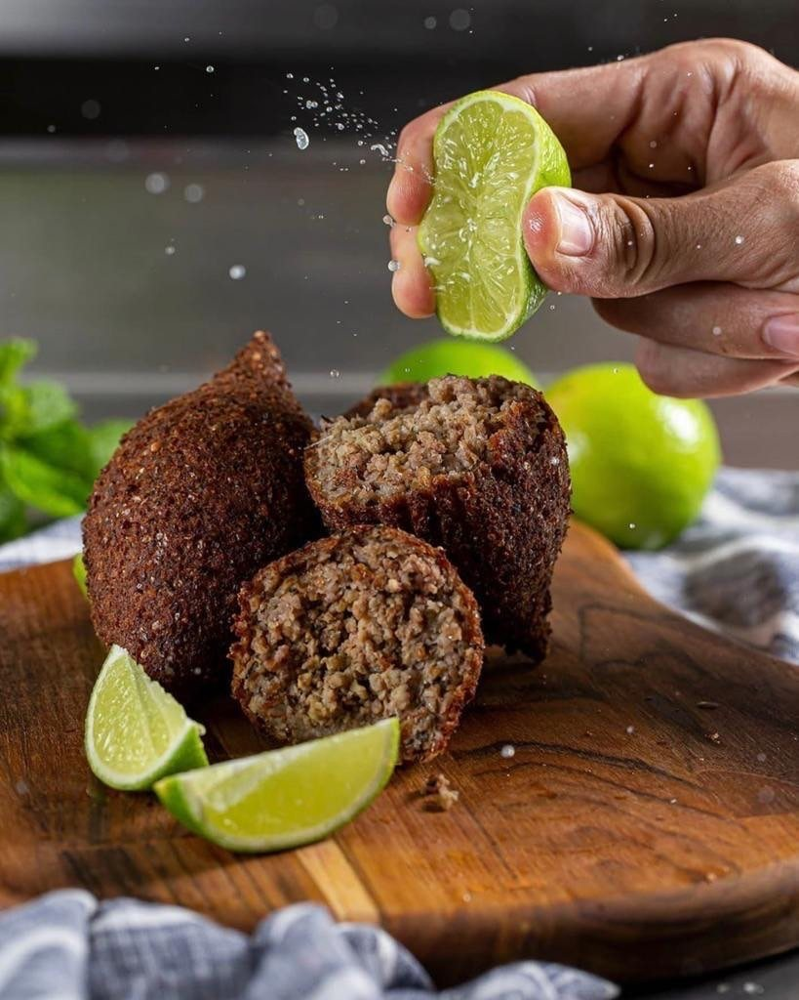
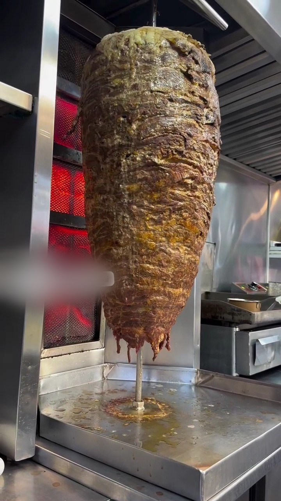

Shawarma
Carne
Carne bovina temperada com especiarias árabes, assada no espeto.
- No pão árabeR$ 40,00
- No bowl—não está no cardápio online
Culinária árabe Imbuí · Salvador
Shawarma de carne, frango ou misto no pão árabe ou no bowl, esfihas, kibes, falafel e hommus. Monte aqui o seu pedido e mande pronto para o WhatsApp da casa, ou venha comer no salão.


O espeto
Fatias finas do espeto vertical, salada, molho de alho e tahine. Escolha a proteína e o jeito de comer; o “+” já põe na sacola com o preço do cardápio.
Carne bovina temperada com especiarias árabes, assada no espeto.

Frango temperado com especiarias árabes, em fatias finas do espeto vertical.

Carne bovina e frango juntos, com salada, molho de alho e tahine.
Por onde começar
Shawarmas, bowls, combos, esfihas, kibes e bebidas, com busca.
Abrir cardápioPara dividirAbertas, fechadas, em porção de seis e os kibes fritos.
Ver a vitrineEntrega33 bairros, pedido mínimo de R$ 30 e retirada no Imbuí.
Ver bairrosSalãoSem reserva: chegue a partir das 17h e escolha no balcão.
Como chegarMesa de entradas
“Falafel, quibe, esfiha, queijo empanado, strips crocantes, batata frita e provolone irresistível!” Do Instagram da casa, 01/10/2026. Aqui, os que estão no cardápio online, com preço.
 Esfiha fechada de carneR$ 13,00
Esfiha fechada de carneR$ 13,00 Esfiha aberta de carneR$ 12,00
Esfiha aberta de carneR$ 12,00 Esfiha de ricotaR$ 14,00
Esfiha de ricotaR$ 14,00 Kibe com molho de alhoR$ 15,00
Kibe com molho de alhoR$ 15,00 3 mini esfihas + 3 mini kibesR$ 36,00
3 mini esfihas + 3 mini kibesR$ 36,00 Esfiha 4 queijosR$ 13,00
Esfiha 4 queijosR$ 13,00Para o vegetariano
Bolinhos de grão de bico “bem crocantes, tipicamente condimentado”, no pão árabe, em porção ou no bowl. O hommus vem em porção de 200 g com pão árabe torrado.

Com hommus, salada e tahine.
R$ 35,00
Bolinhos crocantes com molho de alho.
R$ 34,00
Com salada, hommus, tahine e picles.
R$ 41,00
Do carrinho à casa
“O cheiro do kebab fisga quem passa pela praça do Imbuí”Reportagem do iBahia, janeiro de 2018
“Primeiro num carrinho”, com o espeto de carnes, segundo a reportagem do iBahia de janeiro de 2018.
“Há cerca de três meses, num trailer”: um foodtruck preto na praça entre a Rua das Gaivotas e a Jayme Sapolnik.
Casa fixa no Imbuí, na R. Alberto Fiúsa, com salão, delivery e retirada, e o espeto ainda no centro do balcão.
376 avaliações, consultadas em 06/10/2026
Vim com minha família, grupo de 5 pessoas para conhecer, o ambiente é muito agradável, atendimento maravilhoso e atencioso do início ao fim. Fui bem orientado sobre as opções e tivemos com isso escolhas acertivas. A atendente do caixa foi muito simpática … Voltarei outras vezes...
O shawarma estava delicioso!!! Sem dúvidas, muito bem feito. … A todo instante, os funcionários estão limpando o local, com isso passa mais credibilidade na qualidade e serviço
A demanda estava alta e o pedido demorou bastante para ficar pronto. Mas valeu a espera porque o shawarma de kebab estava delicioso.
Galeria
Monte seu pedido
O pedido chega pronto no WhatsApp da casa, com itens e total, sem comissão de aplicativo. Para entrega, o mínimo é R$ 30. Aqui vai uma seleção; o cardápio completo tem os 46 itens.
Entrega, retirada ou salão
Venha ao salão
A casa abre todos os dias a partir das 17h. O horário de fechamento varia entre as fontes publicadas: confirme pelo WhatsApp. Não precisa reservar.
Dúvidas frequentes
Toque em “+” nos itens, abra a sacola e envie: a mensagem vai pronta para o WhatsApp (71) 99669-8939, com itens e total estimado.
Para entrega, R$ 30,00, conforme o cardápio online da casa.
O cardápio online lista 33 bairros, do Imbuí à Barra. Digite o seu na busca da página de entrega. A taxa é informada na conversa.
Não. É só chegar ao salão no Imbuí, a partir das 17h.
Sim: falafel no pão árabe, em porção e no bowl, além do hommus e das esfihas de queijo e de ricota.
No cardápio online: Pix, Pix automático e cartão de crédito online. No salão, confirme pelo WhatsApp.
Bateu a fome?
Monte o pedido aqui e mande pronto para o WhatsApp da casa, ou venha ao salão. A partir das 17h, todos os dias; confirme o horário de fechamento pelo WhatsApp.